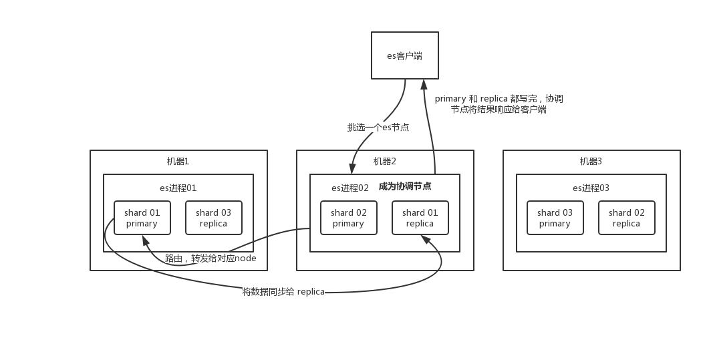

面试题
es 写入数据的工作原理是什么啊？es 查询数据的工作原理是什么啊？底层的 lucene 介绍一下呗？倒排索引了解吗？
面试官心理分析
问这个，其实面试官就是要看看你了解不了解 es 的一些基本原理，因为用 es 无非就是写入数据，搜索数据。你要是不明白你发起一个写入和搜索请求的时候，es 在干什么，那你真的是......
对 es 基本就是个黑盒，你还能干啥？你唯一能干的就是用 es 的 api 读写数据了。要是出点什么问题，你啥都不知道，那还能指望你什么呢？
面试题剖析
es 写数据过程
- 客户端选择一个 node 发送请求过去，这个 node 就是
coordinating node（协调节点）。 coordinating node对 document 进行路由，将请求转发给对应的 node（有 primary shard）。- 实际的 node 上的
primary shard处理请求，然后将数据同步到replica node。 coordinating node如果发现primary node和所有replica node都搞定之后，就返回响应结果给客户端。

es 读数据过程
可以通过 doc id 来查询，会根据 doc id 进行 hash，判断出来当时把 doc id 分配到了哪个 shard 上面去，从那个 shard 去查询。
- 客户端发送请求到任意一个 node，成为
coordinate node。 coordinate node对doc id进行哈希路由，将请求转发到对应的 node，此时会使用round-robin随机轮询算法，在primary shard以及其所有 replica 中随机选择一个，让读请求负载均衡。- 接收请求的 node 返回 document 给
coordinate node。 coordinate node返回 document 给客户端。
es 搜索数据过程
es 最强大的是做全文检索，就是比如你有三条数据：
java真好玩儿啊java好难学啊j2ee特别牛
你根据 java 关键词来搜索，将包含 java的 document 给搜索出来。es 就会给你返回：java真好玩儿啊，java好难学啊。
- 客户端发送请求到一个
coordinate node。 - 协调节点将搜索请求转发到所有的 shard 对应的
primary shard或replica shard，都可以。 - query phase：每个 shard 将自己的搜索结果（其实就是一些
doc id）返回给协调节点，由协调节点进行数据的合并、排序、分页等操作，产出最终结果。 - fetch phase：接着由协调节点根据
doc id去各个节点上拉取实际的document数据，最终返回给客户端。
写请求是写入 primary shard，然后同步给所有的 replica shard；读请求可以从 primary shard 或 replica shard 读取，采用的是随机轮询算法。
写数据底层原理

先写入内存 buffer，在 buffer 里的时候数据是搜索不到的；同时将数据写入 translog 日志文件。
如果 buffer 快满了，或者到一定时间，就会将内存 buffer 数据 refresh 到一个新的 segment file 中，但是此时数据不是直接进入 segment file 磁盘文件，而是先进入 os cache 。这个过程就是 refresh。
每隔 1 秒钟，es 将 buffer 中的数据写入一个新的 segment file，每秒钟会产生一个新的磁盘文件 segment file，这个 segment file 中就存储最近 1 秒内 buffer 中写入的数据。
但是如果 buffer 里面此时没有数据，那当然不会执行 refresh 操作，如果 buffer 里面有数据，默认 1 秒钟执行一次 refresh 操作，刷入一个新的 segment file 中。
操作系统里面，磁盘文件其实都有一个东西，叫做 os cache，即操作系统缓存，就是说数据写入磁盘文件之前，会先进入 os cache，先进入操作系统级别的一个内存缓存中去。只要 buffer 中的数据被 refresh 操作刷入 os cache中，这个数据就可以被搜索到了。
为什么叫 es 是准实时的？ NRT，全称 near real-time。默认是每隔 1 秒 refresh 一次的，所以 es 是准实时的，因为写入的数据 1 秒之后才能被看到。可以通过 es 的 restful api 或者 java api，手动执行一次 refresh 操作，就是手动将 buffer 中的数据刷入 os cache中，让数据立马就可以被搜索到。只要数据被输入 os cache 中，buffer 就会被清空了，因为不需要保留 buffer 了，数据在 translog 里面已经持久化到磁盘去一份了。
重复上面的步骤，新的数据不断进入 buffer 和 translog，不断将 buffer 数据写入一个又一个新的 segment file 中去，每次 refresh 完 buffer 清空，translog 保留。随着这个过程推进，translog 会变得越来越大。当 translog 达到一定长度的时候，就会触发 commit 操作。
commit 操作发生第一步，就是将 buffer 中现有数据 refresh 到 os cache 中去，清空 buffer。然后，将一个 commit point 写入磁盘文件，里面标识着这个 commit point 对应的所有 segment file，同时强行将 os cache 中目前所有的数据都 fsync 到磁盘文件中去。最后清空 现有 translog 日志文件，重启一个 translog，此时 commit 操作完成。
这个 commit 操作叫做 flush。默认 30 分钟自动执行一次 flush，但如果 translog 过大，也会触发 flush。flush 操作就对应着 commit 的全过程，我们可以通过 es api，手动执行 flush 操作，手动将 os cache 中的数据 fsync 强刷到磁盘上去。
translog 日志文件的作用是什么？你执行 commit 操作之前，数据要么是停留在 buffer 中，要么是停留在 os cache 中，无论是 buffer 还是 os cache 都是内存，一旦这台机器死了，内存中的数据就全丢了。所以需要将数据对应的操作写入一个专门的日志文件 translog 中，一旦此时机器宕机，再次重启的时候，es 会自动读取 translog 日志文件中的数据，恢复到内存 buffer 和 os cache 中去。
translog 其实也是先写入 os cache 的，默认每隔 5 秒刷一次到磁盘中去，所以默认情况下，可能有 5 秒的数据会仅仅停留在 buffer 或者 translog 文件的 os cache 中，如果此时机器挂了，会丢失 5 秒钟的数据。但是这样性能比较好，最多丢 5 秒的数据。也可以将 translog 设置成每次写操作必须是直接 fsync 到磁盘，但是性能会差很多。
实际上你在这里，如果面试官没有问你 es 丢数据的问题，你可以在这里给面试官炫一把，你说，其实 es 第一是准实时的，数据写入 1 秒后可以搜索到；可能会丢失数据的。有 5 秒的数据，停留在 buffer、translog os cache、segment file os cache 中，而不在磁盘上，此时如果宕机，会导致 5 秒的数据丢失。
总结一下，数据先写入内存 buffer，然后每隔 1s，将数据 refresh 到 os cache，到了 os cache 数据就能被搜索到（所以我们才说 es 从写入到能被搜索到，中间有 1s 的延迟）。每隔 5s，将数据写入 translog 文件（这样如果机器宕机，内存数据全没，最多会有 5s 的数据丢失），translog 大到一定程度，或者默认每隔 30mins，会触发 commit 操作，将缓冲区的数据都 flush 到 segment file 磁盘文件中。
数据写入 segment file 之后，同时就建立好了倒排索引。
删除/更新数据底层原理
如果是删除操作，commit 的时候会生成一个 .del 文件，里面将某个 doc 标识为 deleted 状态，那么搜索的时候根据 .del 文件就知道这个 doc 是否被删除了。
如果是更新操作，就是将原来的 doc 标识为 deleted 状态，然后新写入一条数据。
buffer 每 refresh 一次，就会产生一个 segment file，所以默认情况下是 1 秒钟一个 segment file，这样下来 segment file 会越来越多，此时会定期执行 merge。每次 merge 的时候，会将多个 segment file 合并成一个，同时这里会将标识为 deleted 的 doc 给物理删除掉，然后将新的 segment file 写入磁盘，这里会写一个 commit point，标识所有新的 segment file，然后打开 segment file 供搜索使用，同时删除旧的 segment file。
底层 lucene
简单来说，lucene 就是一个 jar 包，里面包含了封装好的各种建立倒排索引的算法代码。我们用 Java 开发的时候，引入 lucene jar，然后基于 lucene 的 api 去开发就可以了。
通过 lucene，我们可以将已有的数据建立索引，lucene 会在本地磁盘上面，给我们组织索引的数据结构。
倒排索引
在搜索引擎中，每个文档都有一个对应的文档 ID，文档内容被表示为一系列关键词的集合。例如，文档 1 经过分词，提取了 20 个关键词，每个关键词都会记录它在文档中出现的次数和出现位置。
那么，倒排索引就是关键词到文档 ID 的映射，每个关键词都对应着一系列的文件，这些文件中都出现了关键词。
举个栗子。
有以下文档：
| DocId | Doc |
|---|---|
| 1 | 谷歌地图之父跳槽 Facebook |
| 2 | 谷歌地图之父加盟 Facebook |
| 3 | 谷歌地图创始人拉斯离开谷歌加盟 Facebook |
| 4 | 谷歌地图之父跳槽 Facebook 与 Wave 项目取消有关 |
| 5 | 谷歌地图之父拉斯加盟社交网站 Facebook |
对文档进行分词之后，得到以下倒排索引。
| WordId | Word | DocIds |
|---|---|---|
| 1 | 谷歌 | 1,2,3,4,5 |
| 2 | 地图 | 1,2,3,4,5 |
| 3 | 之父 | 1,2,4,5 |
| 4 | 跳槽 | 1,4 |
| 5 | 1,2,3,4,5 | |
| 6 | 加盟 | 2,3,5 |
| 7 | 创始人 | 3 |
| 8 | 拉斯 | 3,5 |
| 9 | 离开 | 3 |
| 10 | 与 | 4 |
| .. | .. | .. |
另外，实用的倒排索引还可以记录更多的信息，比如文档频率信息，表示在文档集合中有多少个文档包含某个单词。
那么，有了倒排索引，搜索引擎可以很方便地响应用户的查询。比如用户输入查询 Facebook，搜索系统查找倒排索引，从中读出包含这个单词的文档，这些文档就是提供给用户的搜索结果。
要注意倒排索引的两个重要细节：
- 倒排索引中的所有词项对应一个或多个文档；
- 倒排索引中的词项根据字典顺序升序排列
上面只是一个简单的栗子，并没有严格按照字典顺序升序排列。